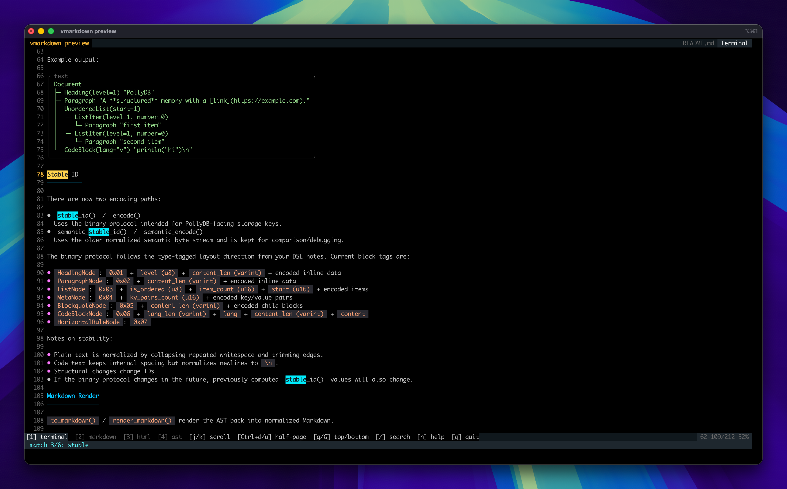

Edit in place
Enter Insert mode with i, return with Esc, and navigate with familiar Vim keys.
Parse Markdown into a typed AST — or open the cross-platform editor binary and work directly in Terminal, Markdown, HTML, and AST views.
// Parse once. Keep the structure.
import vmarkdown
doc := vmarkdown.parse('# Hello\n\nBuild **fast**.')!
println(doc.pretty())
// Document
// ├─ Heading(level=1) "Hello"
// └─ Paragraph "Build **fast**."The parser you can type into
vmarkdown is also a focused full-screen editor binary. Open a file, edit the original Markdown, and inspect the rendered document without leaving the keyboard.
vmarkdown
Typed Markdown infrastructure for V.
• Typed, lossless AST
• Stable document IDs
• Terminal-native diagrams# vmarkdown
Typed Markdown infrastructure for V.
- Typed, lossless AST
- Stable document IDs
- Terminal-native diagrams<h1>vmarkdown</h1>
<p>Typed Markdown infrastructure for V.</p>
<ul>
<li>Typed, lossless AST</li>
<li>Stable document IDs</li>
</ul>Document
├─ Heading(level=1) "vmarkdown"
├─ Paragraph "Typed Markdown…"
└─ UnorderedList
├─ ListItem "Typed, lossless AST"
└─ ListItem "Stable document IDs"Enter Insert mode with i, return with Esc, and navigate with familiar Vim keys.
Switch between Terminal, Markdown, HTML, and AST while staying anchored to the same source position.
Atomic writes, undo/redo, and external-change detection protect work before anything is overwritten.
$ vmarkdown preview README.md
Built for real syntax
vmarkdown turns Markdown into explicit V sum types, so downstream tools can inspect, transform, index, and render documents with confidence.
Headings, paragraphs, nested lists, tables, code blocks, and inline nodes stay explicit and traversable.
Generate deterministic IDs from normalized document structure for storage, indexing, caching, and change detection.
Move between Markdown, HTML, text, JSON, and terminal output through one focused API.
One parser · many paths
Diagrams without the browser
Render flowcharts, sequences, states, classes, ER models, timelines, journeys, git graphs, and more as readable Unicode layouts — directly in your CLI.

Three lines to structure
Drop vmarkdown into a V project and start with the API you already know.
v run examples/basic.vimport vmarkdown
doc := vmarkdown.parse('# hello\n\nworld')!
println(doc.stable_id())Open source · MIT licensed